Tamano, Okayama: things to do, food and stays
Tamano · Okayama
Tamano
Highlighted on the Okayama map.
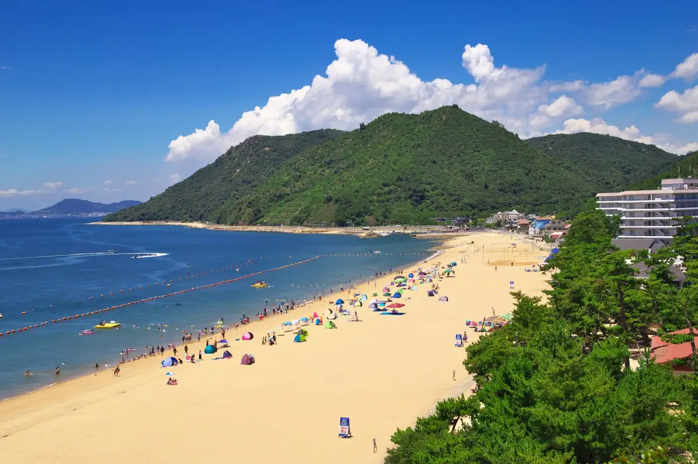
Stay
UNO HOTEL
UNO HOTEL
Inn in Chikko, Tamano with scenic views.
KEIRIN HOTEL 10 by 温故知新
KEIRIN HOTEL 10 by Onkochishin
蜜土（みつど）
Mitsu Tsuchi (Mitsudo)
日々の宿 ひねもす
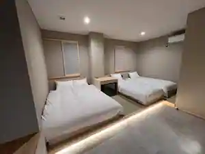
Hibi No Yado Hinemosu
虎所lit
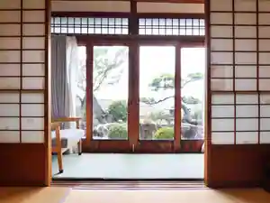
Tora Tokoro lit
Inn in Uno, Tamano with a renovated traditional house.
ウノポートイン
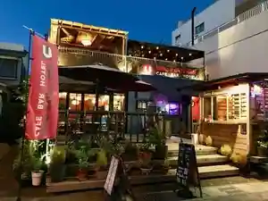
Unopotoin
ＵＮＯ ＨＯＴＥＬ
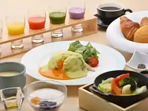
UNO HOTEL
ＫＥＩＲＩＮ ＨＯＴＥＬ １０ by 温故知新
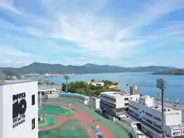
KEIRIN HOTEL 10 by Onkochishin
SETONITE
SETONITE
てんとうみ 渋川海岸グランピング
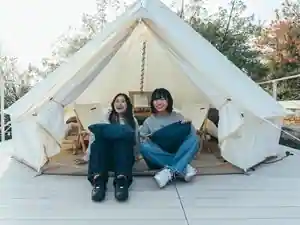
Tentomi Shibukawa Kaigan Guranpingu
ダイヤモンド瀬戸内マリンホテル
Daiyamondo Setochi Marin Hotel
Dining
おまち堂
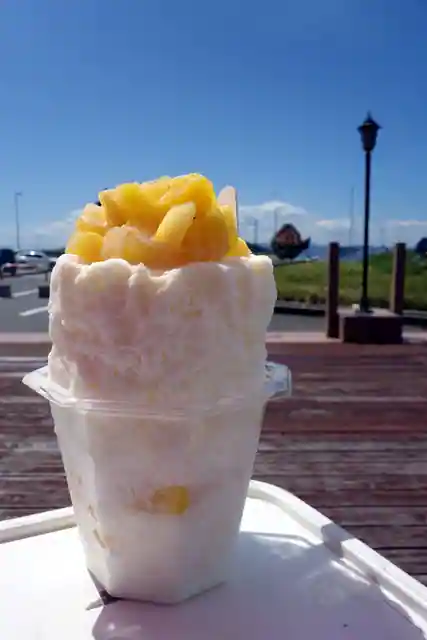
Omachi Do
ナンバーエイト ワイヤー
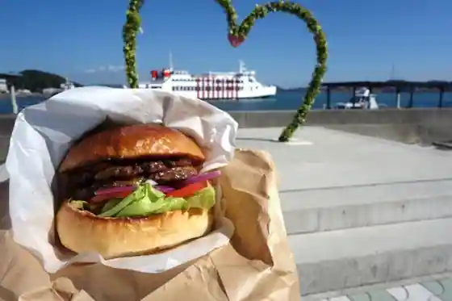
Nanbaeito Waiya
瀬戸内レストラン BLUNO
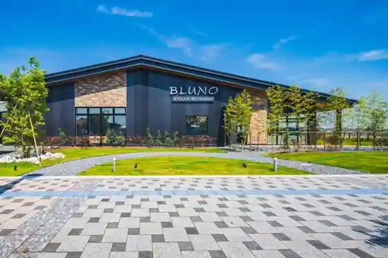
Setochi Restaurant BLUNO
萬福軒
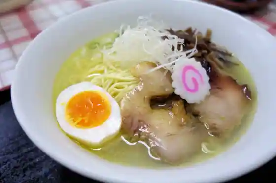
Banpuku Ken
背油におぼれし者
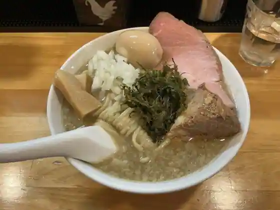
Seabura Nioboreshi Mono
大阪屋食堂
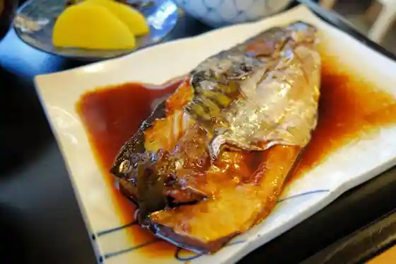
Osaka Ya Shokudo
ネネ・グース・カフェ
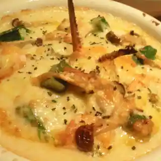
Nene Gusu Cafe
海廊
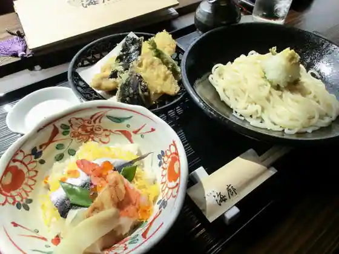
Umi Ro
鳴瀧園 ふくろう亭
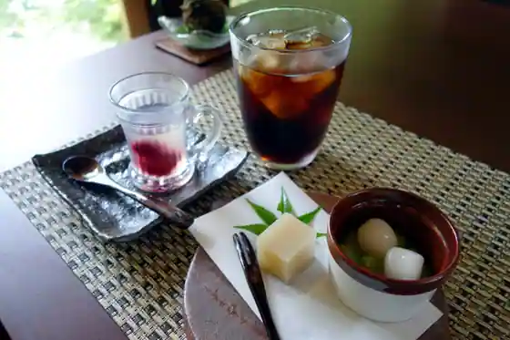
Narutaki Sono Fukuro Tei
中華そば専門店 広松 玉野紅陽台店
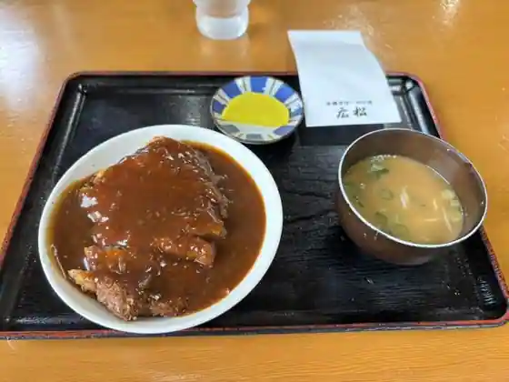
Chuka Soba Senmon Hiromatsu Tamano Kurenai Yodai
池田屋寿司割烹店 宇野支店
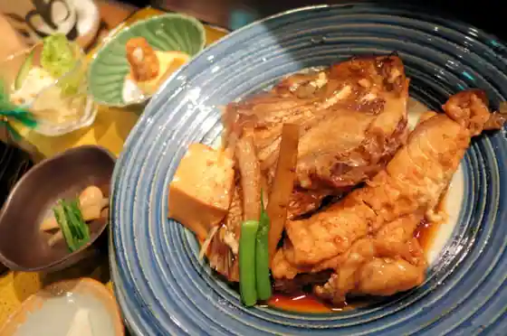
Ikeda Ya Sushi Kappo Uno Shi
ベーカリー ジャム
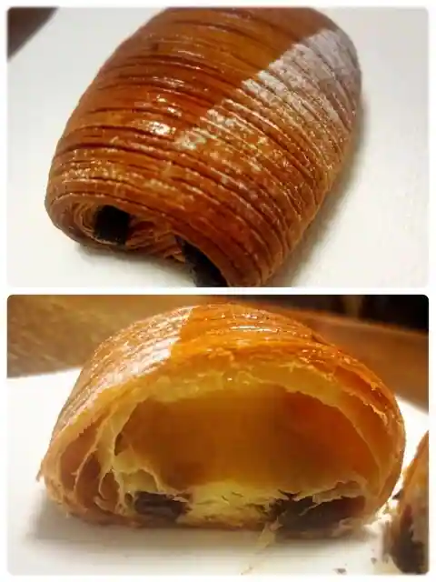
Bakery Jamu
鳥ガラらーめん はれ三
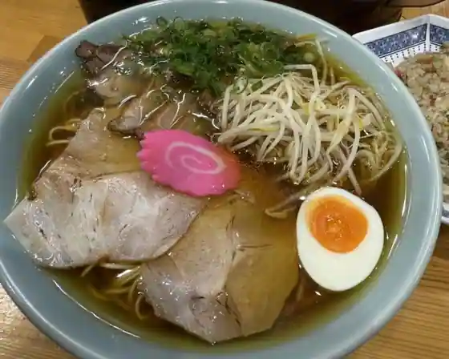
Tori Gara Ramen Hare San
Legare
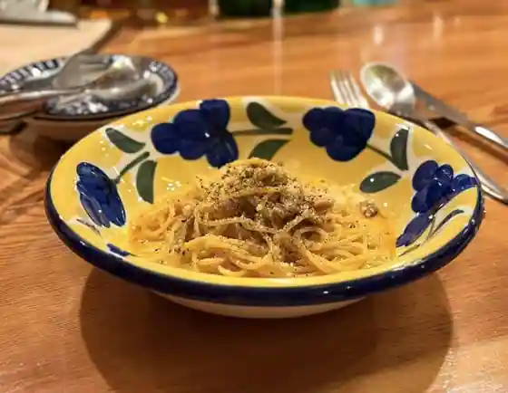
Legare
無天茶坊
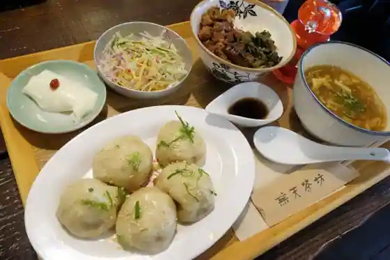
Muten Cha Bo
アロハ ドライブイン
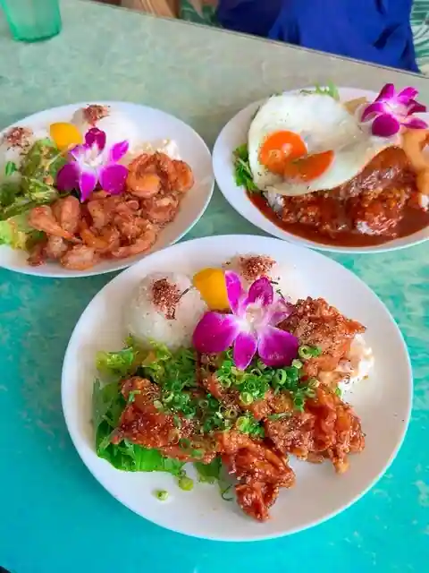
Aroha Doraibuin
Cafe & Restaurant FORQ
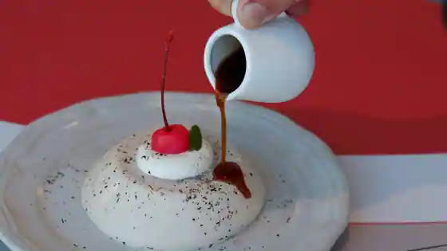
Cafe & Restaurant FORQ
寿司・割烹 池田屋 本店
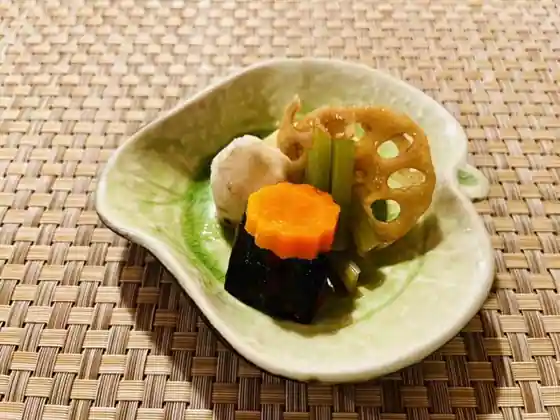
Sushi Kappo Ikeda Ya Hon
maholova
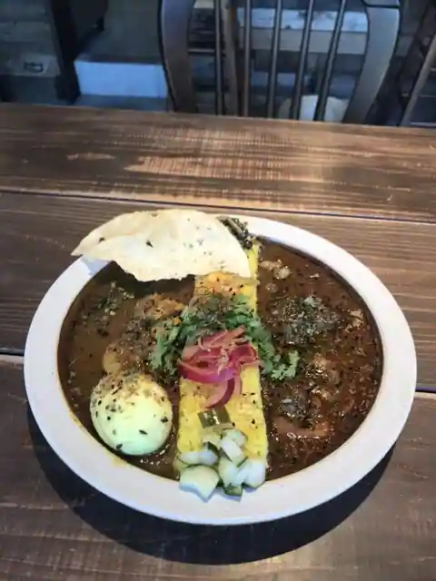
maholova
ごはんとおさけ おいとま
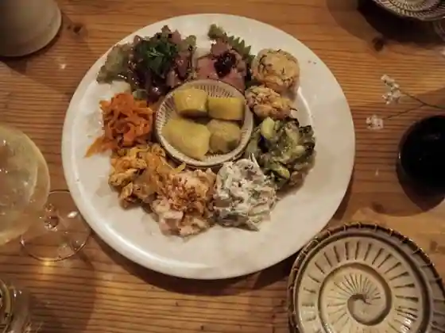
Gohantosake Oitoma
ラーメン信
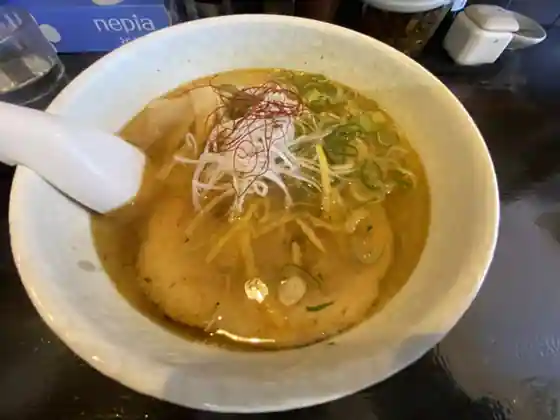
Ramen Shin
UPINN CAFE
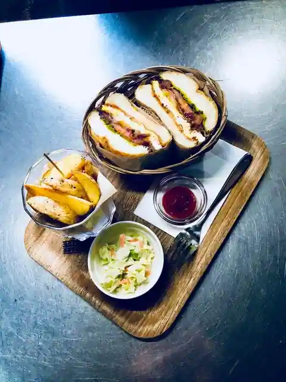
UPINN CAFE
VOGA
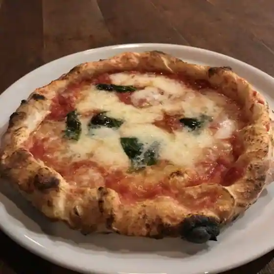
VOGA
OCEAN VILLAGE
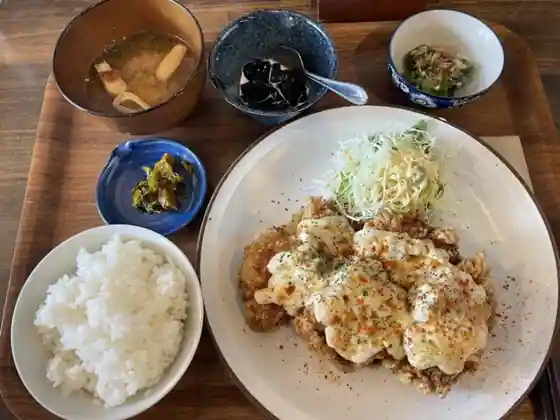
OCEAN VILLAGE
Sights
Shibukawa Beach (Shibukawa Coast)
White-sand swimming beach at Shibukawa with Ojigatake behind it; Okayama tourism hero photo of the shore.
Ojigagaku
Coastal rocky viewpoint spanning Tamano and Kurashiki, documented on Okayama tourism.
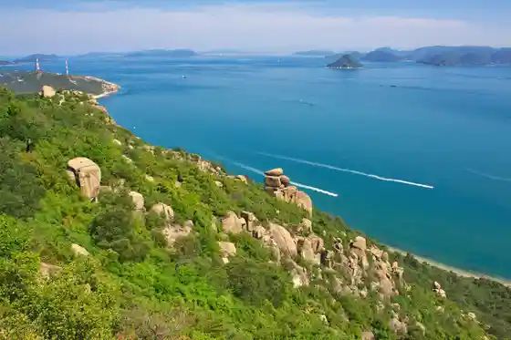
Shibukawa Marin Aquarium (Tamano Rikkai Hiroshi Museum)
Tamano City marine museum and aquarium at Shibukawa, listed on Okayama tourism.
Roadside Station Miyama Park
Roadside station at Miyama Park in Tai, listed on Okayama tourism.
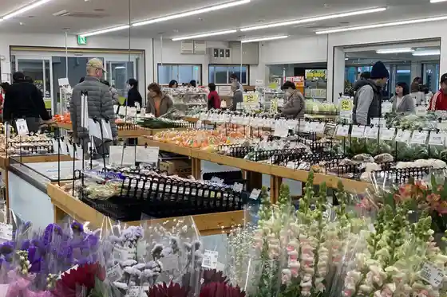
Miyama Park
Miyama Park green space in Tai, listed on Okayama tourism (same park complex as the English garden).
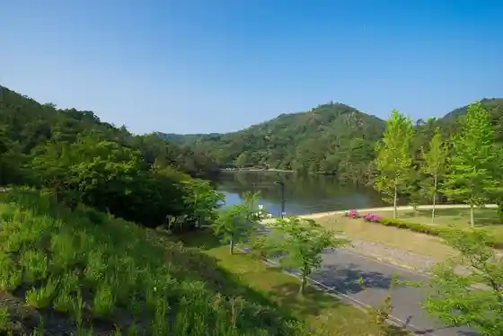
Miyama Igirisu Garden
English-style garden inside Miyama Park, listed on Okayama tourism.
Uno Minato Shuhen Atosaito
Outdoor art installations around Uno Port, listed on Okayama tourism.
Uno no Chinu / Uno Kochinu
Large black sea bream (“Chinu”) art object at Uno Port, listed on Okayama tourism.
Jozan Castle Ruins
Castle ruin site on Mt. Tsuneyama, listed on Okayama tourism.
Shibukawa Park
Park at Shibukawa known for wisteria trellises, listed on Okayama tourism.
Nichi no Shutsu Coast
Sunrise coastline park area in Chikko, listed on Okayama tourism.
Ishijima
Island south of Tamano (north side in Tamano City, south toward Naoshima), listed on Okayama tourism.
Tamano Keirinjo
Keirin (bicycle racing) stadium in Uno Chikko, listed on Okayama tourism.
Tama Hime Shrine
Shrine in Tama, Tamano, listed on Okayama tourism.
Tamano Tourist Information
Tourist information counter inside JR Uno Station, listed on Okayama tourism.
Tai Minato Park
Waterfront park in Tai harbor, listed on Okayama tourism.
Yotaro Shrine
Shrine in Yahama-cho Osaki, Tamano, listed on Okayama tourism.
Suzuri I Tenmangu Shrine
Tenman-gū shrine in Yahama-cho Osaki, Tamano, listed on Okayama tourism.
Tamano Supotsu Center
Public sports center in Tai beside Miyama Park, listed on Okayama tourism.
Miyama Igirisu Teien Boranteia no Kai
Volunteer group supporting Miyama English Garden in Tai, listed on Okayama tourism.